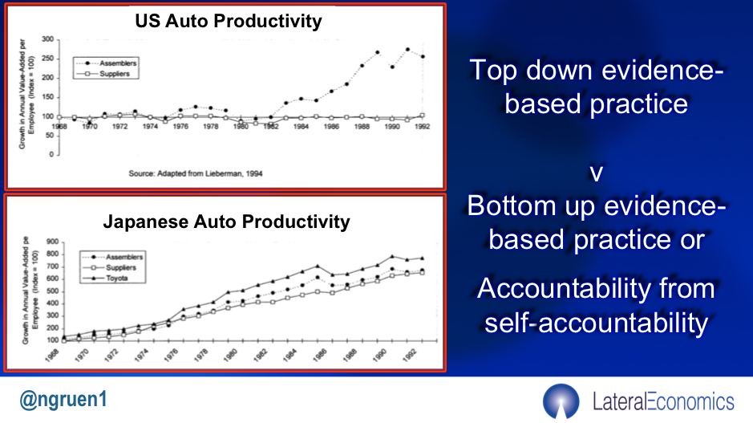
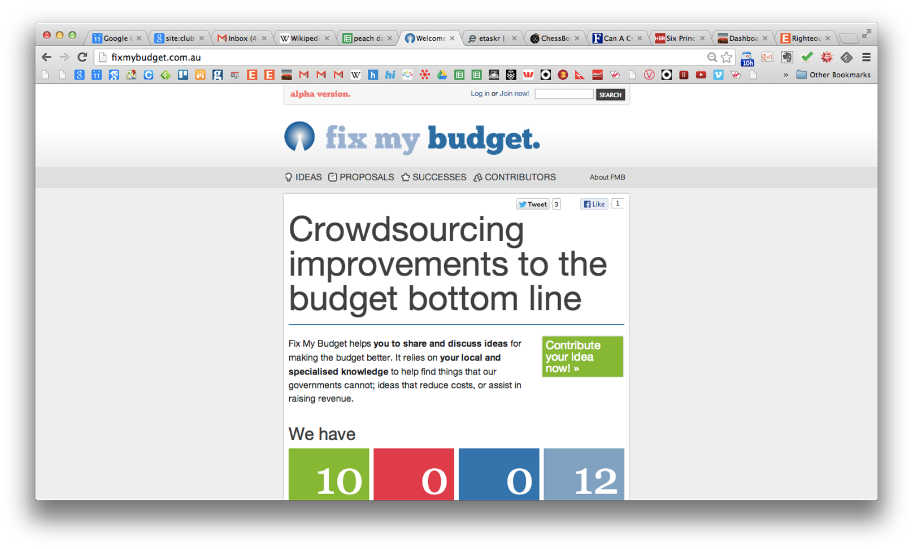

Creating and managing a high-performance knowledge-sharing network: the Toyota caseI recently reposted my old column on blogging the 2008 crisis and there's been some great blogging of this crisis. What about crowdsourcing the crisis? To some extent, we're doing that with people out here in television land suggesting stuff and bureaucrats and politicians 'triaging' those ideas along with their own and their masters' to try to respond to the spectacularly difficult position we're in.
But having to be funnelled through the bureaucracy, this system is necessarily going to focus on all the big things – which are the most important things at least in the short term. In the longer-term however fine-grained attention to detail is arguably more, perhaps a lot more important. The graphs I've used above show the staggering difference in productivity growth over a long period of time between two hierarchies one of which has a functioning system of encouraging and implementing 'bottom-up' improvements while the other doesn't.
When the Government 2.0 Taskforce ran in 2009, lots of people were saying "why can't we have a Wikipedia of government?" My answer then, as now, is that Wikipedia and open source software were unusual outliers, or to change the metaphor, low hanging fruit. If crowds are to displace the work of well-organised hierarchies they need a focus of convergence. With open-source software, it's software that works or works better. With Wikipedia, the point of convergence is the NPOV or 'neutral point of view'. You can't get agreement on Wikipedia on whether Donald Trump is a good president or not, but you can about when he was born.[1. Just to drive home the point, the NPOV even works if you can't agree even on that. Then you can agree on the disagreement about the source. "The NYC records say Donald Trump was born in NYC on June 14, 1946, but Barack Obama has raised doubts about this and has presented evidence that Donald Trump was not born, but rather hatched and that this took place in 1947 in Kenya".]
Although there were various near hoax stories, for instance, that the New Zealand police got the police act written on a wiki, the fact is that running a government is not about what is the case, but what ought to be the case. There was also a lot of hype about prediction markets at the time. Prediction markets are fine things, but they're on the same side of the is/ought divide. They give you insights into the likely state of the world and provide only indirect insight as to what we should do.
The point of convergence is not just a guide for participants in their own work and in their choice of whose work is published (on Wikipedia) or enters the codebase (in open source software). It's the principle around which a deep and hierarchical meritocracy is built.[1. As I wrote here,
- The vast outpouring of content available on the internet also means that one of the critical services provided by platforms is the filtering of content.
- In purely social networks like Facebook and Twitter ‘friending’, ‘trending’ and ‘tagging’ provide principle means of filtering.
- However, where users are interested in the quality of the content, either the project hierarchy filters good from bad content itself a la Wikipedia or it establishes a means by which reputations can be judged. Thus eBay records and presents reputational information to enable users of the site to identify good trading partners. Other sites like Slashdot have built organic, meritocratic elites within the project based on the community’s perception of the quality of individuals' contributions with enhanced influence rewarding enhanced reputation.
]
In deliberative discussion which is necessary to decide good from bad policy, we've not done so well. At the time of the Government 2.0 Taskforce. we pointed to the way in which the new tools held out hope of such a possibility but didn't say much about how to build them. I went on a lot about the prospects it gave for the existing system to open up to new possibilities – for instance in identifying new talent. It still could, but existing systems aren't very good at doing that.
But at the same time as the possibility of opening up discussion more widely presented itself, so the scope for media gotcha also ramped up. There were now millions of pairs of eyes looking for opportunities to misrepresent officialdom and get the resentment spiral going for their side of the ideological divide, or maybe just for kicks. And the incumbent system was already paranoid about being misrepresented, as well it might have been, given the mass media's lack of interest in asserting its own role in being an active 'umpire' of partisan debate – it was simply optimising eyeballs and clicks long before social media revved up the effect.[1. See this post, especially section III for examples.]
So we needed to explore digital tools to establish more meritocracy online. As I've argued elsewhere, that is a critical part of the middleware of democracy about which we've done next to nothing. As far as policymaking is concerned, shortly after the conclusion of the Government 2.0 Taskforce, a couple of volunteers helped me build a demonstration site which was an attempt to work towards a solution to these problems.
I chose fiscal policy as a good area in which to build a proof of concept. Below the fold is an edited version of a concept document produced then.

FixMyBudget is a site that will ‘crowdsource’ proposals for improving the budget bottom line, either by identifying ways governments can save money or ways they can plug tax loopholes.Attempts to crowdsource policy proposals are popular but have not been a major success. An important reason for this is that most attempts to do this have been insufficiently structured. They have been easily ‘hijacked’ by political activists or just ‘trolls’ who enjoy provoking others.
Where the task has been simply to state facts – as it largely is in the case of Wikipedia – a very flat structure can work. However, where we are seeking to make difficult choices to identify what are the best policy ideas, FixMyBudget will pursue a more structured approach.
Though all comers will be welcome to contribute on the site, newcomers will begin with just one deliberative vote as against a higher number of votes for those who are accepted by the site as experts. As they gain experience and we gain trust in their contributions and their judgment, those who began as newcomers on the site will be able to earn the same voting rights as experts.
As we prove up policy ideas, they will be sent in some priority order to the government with public tracking and reporting of progress being made with each idea. In addition, we will seek sponsors to fund prizes for the best suggestions or other contributions each month. Over time we hope to establish wikis on other areas of government policy, but we’re starting with budgeting.
We’re in the process of putting together a board of advisors who will be respected experts in their field. If you are a well-respected policy professional we’d appreciate your involvement. Once the site goes live – which we hope to do by Budget time this year, or May 10th, you can help us by telling others about the site and by using it yourself. If you teach, you may be able to refer your students to the site and to encourage them to use it. You might even allow students to earn credit towards their studies with sufficient contributions of a sufficient standard to the site.
Users would write out their ideas on the web-page below and the ideas could then be commented on, critiqued and improved by other users. Should they wish, users would have identities – or pseudonyms – so that their identities remained stable and they could build up their reputation on the site. Visitors would be permitted to nominate ideas or to contribute to the development of others’ ideas but would not be able to graduate to higher levels of authority on the site. Those with higher levels of authority will have more say in how ideas are developed and in choosing those ideas as worthy of submission to government.
The site will be suitable for federal, state or local government, and we will make the appropriate arrangements to adapt the site as we gain experience with the needs of each.
When he saw an earlier draft, Matt Landauer who was instrumental in setting up Open Australia and other associated sites wasn't impressed:
This looks like another bureaucracy in the making. Nothing about this proposal so far looks fun playful or engaged. It feels very hierarchical. There's too much judging, and not enough collaborating. Even the language needs to open up. Can we start again, from the desired outcomes, and ask - what would be a fun playful engaged way to solve a problem
He certainly has a point as far as encouraging participation. But I think if we are to find ways of breaking the 'is/ought' barrier we need to build a meritocracy within the operations of crowdsourcing sites. And if we're seeking to do that in a subject area like this there's a good deal of judgement that needs to be shown.[1. Note this doesn't mean that one would be tied to a unitary system of judgement. Different contributors could be a different number of votes by different systems, so that one could put a 'lens' over a set of proposals favouring some values over others.] I'd add that nothing much about linux or Wikipedia for that matter looks like 'fun'. These sights seek to be useful above all. And people buy into them. The need for things to be 'fun' is the way things have to be in engaging people in politics. But I think that's one part bug and one part feature. There's lots of things about government that are not fun. Their predominant task is to be useful. It's just that we have only one model for rewarding people reliably for being useful in government — and that's paying public servants. But public servants get the money whether they're useful or not. And it's a hard problem to improve that system — of bureaucracy. I'm trying to build something alongside it. Part of the game plan was that one would gradually build a powerful brainstorming and analytical capability outside government. One would then invite governments to participate in some way. Certainly one couldn’t stop practising public servants from moonlighting on the site. And with a steady stream of ideas being served up – with some publicity being given to the process – one might be able to create an environment where the government would feel obliged to respond. We didn't proceed with the project. I didn't want to spend the time that would have been necessary to be the CEO. I was doing lots of other things. And no-one else stepped forward. Governments sounded interested but didn't do anything. I'm setting this out now simply to say how powerful a capability like this might have been at a time like this – where it would help in the sweating of the small stuff while the centre of the system worked on the big-ticket items.
Speaking of top-down approaches, I recently ran into this old post in which I quote Dani Rodrik on this exact point.